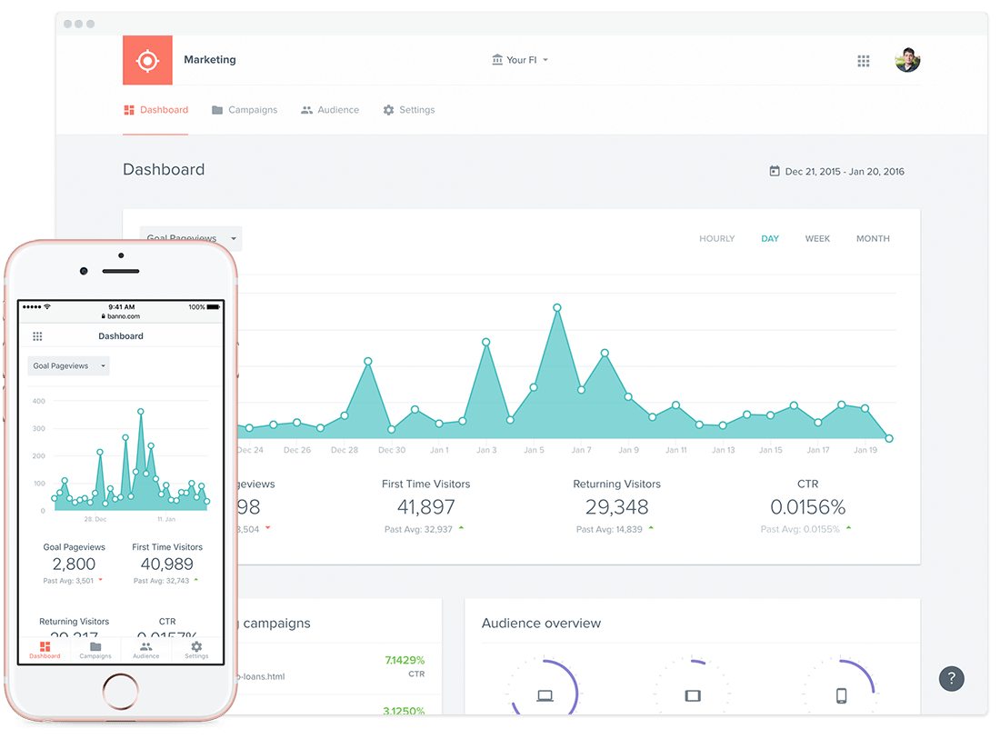
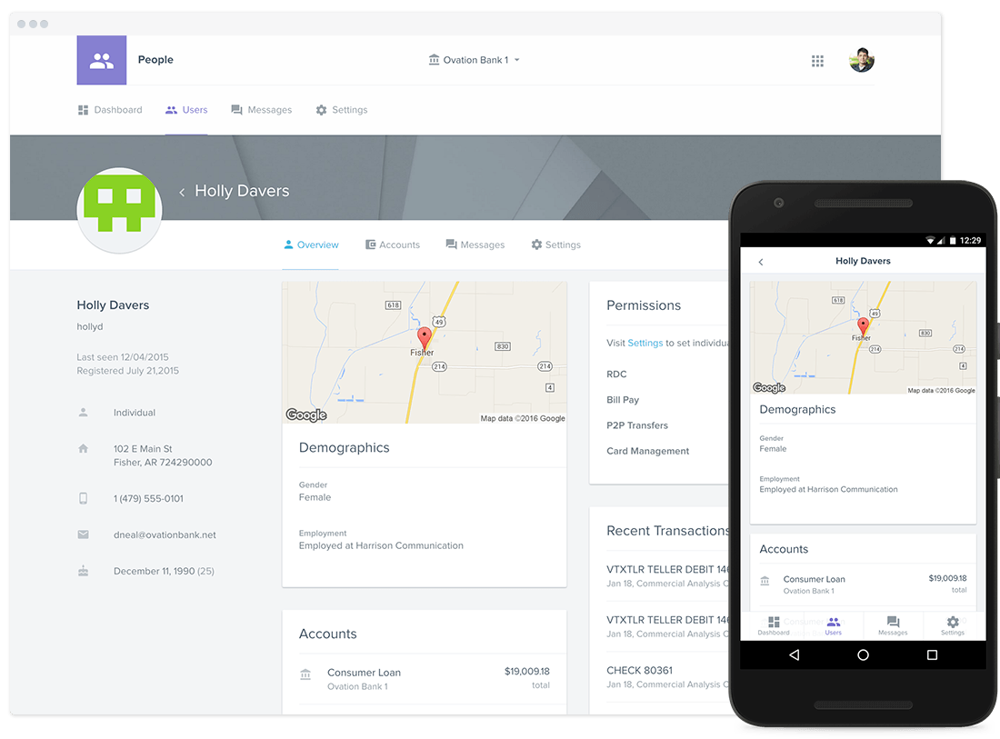
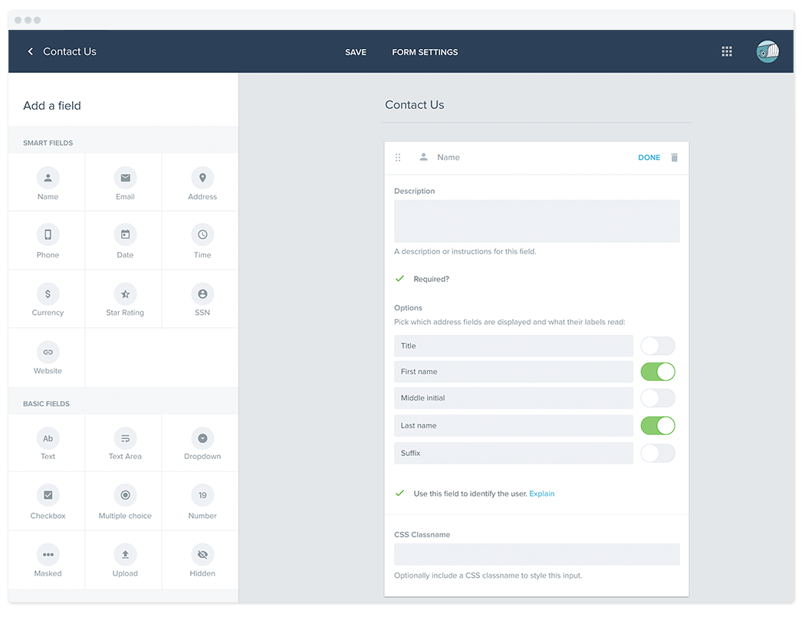
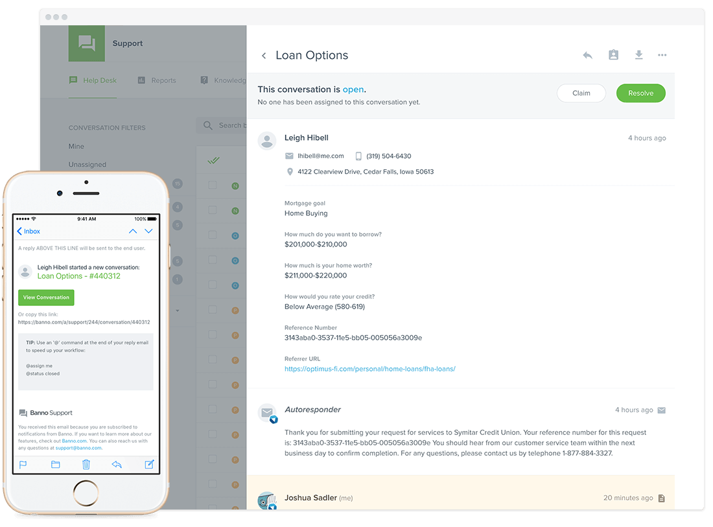
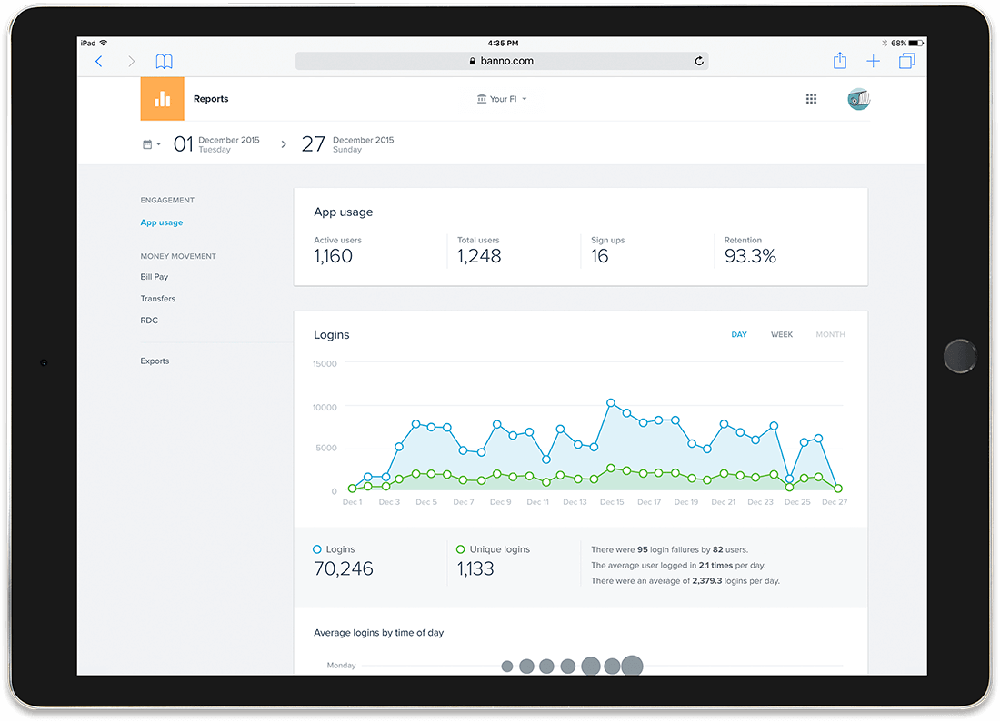
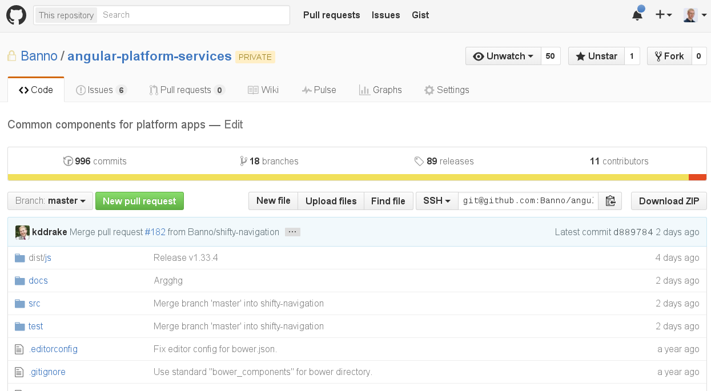
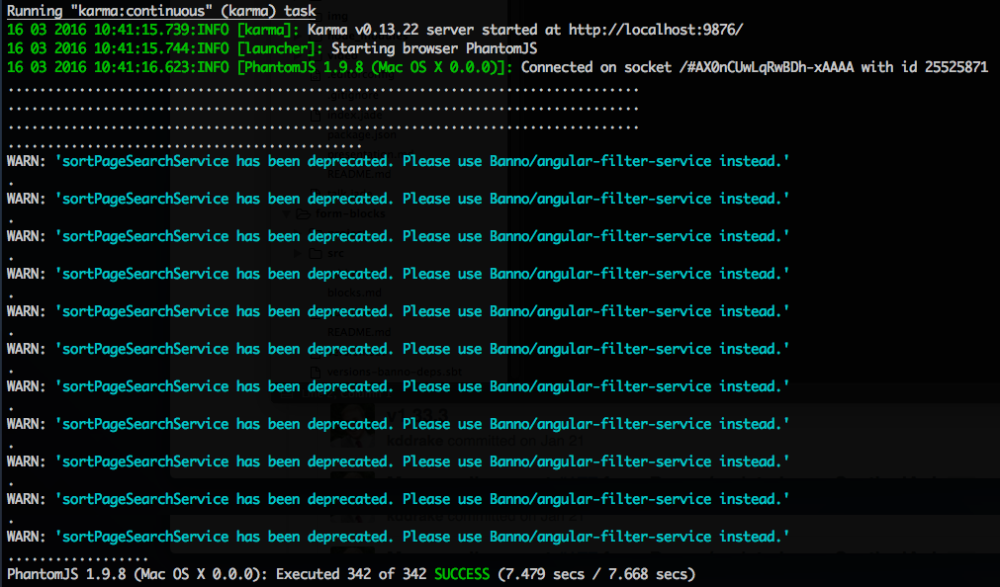

Automate Your Browser Testing
About Me





Writing tests sucks...
Writing tests is a chore.
It's hard to get developers to write tests, especially when starting a new project or feature.
...but it's still better than no tests.
- You want your website to be available and working for you customers.
- You don't want to be caught by surprise.
- But you don't want to spend time manually testing your site.
How can we make this
as painless as possible?
A Quick Story


Testing Spectrum
- unit testing
- integration testing
- acceptance testing
- end-to-end (E2E) testing
Selenium WebDriver
A common interface for communicating with browsers
- Runs on Windows/Mac/Linux
- Write in Java, C#, Perl, PHP, Python, Ruby, and more
- Supports Firefox, Chrome, Opera, Safari 5.1+, IE7-11, Edge
Testing Frameworks

Nightwatch
- NodeJS
- All-in-one
- Mature
- Fairly popular
- Decent documentation
- Easy-ish to get started
Step 1
Install browsers you want to test against.
Selenium Setup
var selenium = require('selenium-standalone');
var seleniumProcess = null; // for tracking the selenium process
gulp.task('selenium:install', function(done) {
selenium.install(done);
});
gulp.task('selenium:start', ['selenium:install'], function(done) {
selenium.start(function(err, process) {
seleniumProcess = err ? null : process;
done();
});
});Nightwatch Setup
var spawn = require('child_process').spawn;
gulp.task('test', ['selenium:start', 'serve'], function(done) {
var nw = spawn('./node_modules/.bin/nightwatch', [
'--config', 'test/nightwatch.conf.js'
]);
nw.stdout.on('data', function(data) {
console.log(data.toString());
});
nw.stderr.on('data', function(data) {
console.log(data.toString());
});
nw.on('close', function(code) {
gutil.log('Nightwatch process exited with code', code);
if (seleniumProcess) {
seleniumProcess.kill();
seleniumProcess = null;
}
done();
});
nw.on('error', function(err) {
gutil.log('Failed to start Nightwatch process', err);
});
});Nightwatch Config
module.exports = {
src_folders: 'test',
output_folder: false,
test_settings: {
default: {
launch_url: 'http://localhost:8080/',
filter: '*.spec.js',
screenshots: {
enabled: false,
path: ''
},
desiredCapabilities: {
browserName: 'chrome',
javascriptEnabled: true,
acceptSslCerts: true
}
}
}
};Writing Tests
- Navigate to a webpage.
- Locate an HTML element on the Web page.
- (optional) Perform actions on HTML elements, like a user would.
- Run assertions.
module.exports = {
'Initial loading': function(browser) {
browser
.init()
.waitForElementVisible('div.flowtime', 1000)
.assert.visible('h1')
.assert.containsText('h1', 'Automate Your Browser Testing')
.end();
}
};Available Methods
Check out the Nightwatch API docs for details.
Why The Cloud?
- Don't want to install all the browsers on every dev's machine.
- E2E tests are slower than unit tests.
- Want continuous integration (CI).
Sauce Labs in Nightwatch Config
module.exports = {
src_folders: 'test',
output_folder: false,
test_settings: {
default: {
// ... same as before ...
},
saucelabs: {
selenium_host: 'ondemand.saucelabs.com',
selenium_port: 80,
username: '${SAUCE_USER}',
access_key: '${SAUCE_ACCESS_KEY}',
silent: true,
output: true,
screenshots: {
enabled: false,
on_failure: true,
path: ''
},
selenium: {
start_process: false
}
}
}
};Sauce Connect
Sauce Connect is a tunneling app that you set up in your local network that opens a secure connection between a Sauce Labs virtual machine running your browser tests, and an application or website you want to test that's on your local machine or behind a corporate firewall.
$ sc -u SAUCE_USERNAME -k SAUCE_ACCESS_KEYGetting Started
- Choose a testing framework that works for you.
- Start small -- major features & critical paths.
- Start with the most important (or problematic) browsers.
- As problems arise and are fixed, write a test for to watch for regressions.